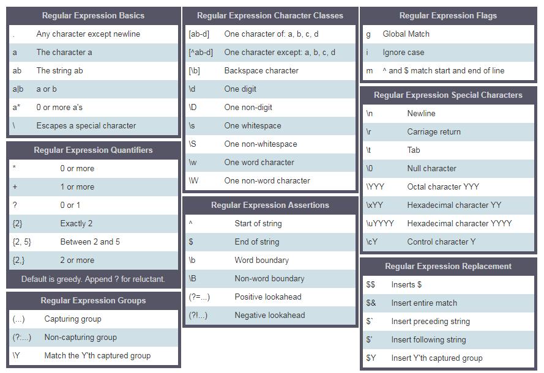

📘 Hari 12
Regular Expressions
Regular expression alias RegExp itu semacam bahasa mini yang super berguna buat nyari pola dalam data. RegExp bisa dipake buat ngecek apakah suatu pola ada di berbagai tipe data. Di JavaScript, kita bisa bikin RegExp pake RegExp constructor atau langsung deklarasi pola pake dua garis miring plus flag. Jadi ada dua cara nih buat bikin pola.
Buat deklarasi string kita pake tanda kutip tunggal, ganda, atau backtick. Nah, buat regular expression kita pake dua garis miring dan flag opsional. Flag-nya bisa berupa g, i, m, s, u atau y.
Parameter RegExp
Regular expression nerima dua parameter. Satu pola pencarian yang wajib, dan satu flag opsional.
Pola
Pola bisa berupa teks biasa atau bentuk pola apa pun yang punya kemiripan tertentu. Misalnya nih, kata "spam" di email bisa jadi pola yang pengen kita cari, atau format nomor telepon yang mau kita deteksi.
Flag
Flag itu parameter opsional di regular expression yang nentuin jenis pencariannya. Yuk kenalan sama beberapa flag:
- g: flag global, artinya nyari pola di seluruh teks
- i: flag case insensitive (nyari huruf kecil maupun huruf besar, santuy aja)
- m: multiline
Membuat pola dengan RegExp Constructor
Deklarasi regular expression tanpa flag global dan flag case insensitive.
// without flag
let pattern = 'love'
let regEx = new RegExp(pattern)
Deklarasi regular expression dengan flag global dan flag case insensitive.
let pattern = 'love'
let flag = 'gi'
let regEx = new RegExp(pattern, flag)
Deklarasi pola regex pake objek RegExp. Tulis pola dan flag di dalam RegExp constructor.
let regEx = new RegExp('love','gi')
Membuat pola tanpa RegExp Constructor
Deklarasi regular expression dengan flag global dan flag case insensitive.
let regEx= /love/gi
Regular expression di atas sama persis sama yang kita bikin pake RegExp constructor tadi.
let regEx= new RegExp('love','gi')
Metode Objek RegExp
Yuk kita liat beberapa metode RegExp yang sering dipake.
Menguji kecocokan
test(): Ngetes kecocokan dalam string. Return-nya true atau false.
const str = 'I love JavaScript'
const pattern = /love/
const result = pattern.test(str)
console.log(result)
true
Array yang berisi semua kecocokan
match(): Ngembaliin array yang berisi semua kecocokan, termasuk capturing groups, atau null kalau nggak ada yang cocok. Kalau nggak pake flag global, match() ngembaliin array berisi pola, indeks, input, dan group.
const str = 'I love JavaScript'
const pattern = /love/
const result = str.match(pattern)
console.log(result)
["love", index: 2, input: "I love JavaScript", groups: undefined]
const str = 'I love JavaScript'
const pattern = /love/g
const result = str.match(pattern)
console.log(result)
["love"]
search(): Ngetes kecocokan dalam string. Ngembaliin indeks kecocokan, atau -1 kalau nggak ketemu.
const str = 'I love JavaScript'
const pattern = /love/g
const result = str.search(pattern)
console.log(result)
2
Mengganti substring
replace(): Nyari kecocokan di string dan ganti substring yang cocok dengan substring baru.
const txt = 'Python is the most beautiful language that a human begin has ever created.\
I recommend python for a first programming language'
matchReplaced = txt.replace(/Python|python/, 'JavaScript')
console.log(matchReplaced)
JavaScript is the most beautiful language that a human begin has ever created.I recommend python for a first programming language
const txt = 'Python is the most beautiful language that a human begin has ever created.\
I recommend python for a first programming language'
matchReplaced = txt.replace(/Python|python/g, 'JavaScript')
console.log(matchReplaced)
JavaScript is the most beautiful language that a human begin has ever created.I recommend JavaScript for a first programming language
const txt = 'Python is the most beautiful language that a human begin has ever created.\
I recommend python for a first programming language'
matchReplaced = txt.replace(/Python/gi, 'JavaScript')
console.log(matchReplaced)
JavaScript is the most beautiful language that a human begin has ever created.I recommend JavaScript for a first programming language
const txt = '%I a%m te%%a%%che%r% a%n%d %% I l%o%ve te%ach%ing.\
T%he%re i%s n%o%th%ing as m%ore r%ewarding a%s e%duc%at%i%ng a%n%d e%m%p%ow%er%ing \
p%e%o%ple.\
I fo%und te%a%ching m%ore i%n%t%er%%es%ting t%h%an any other %jobs.\
D%o%es thi%s m%ot%iv%a%te %y%o%u to b%e a t%e%a%cher.'
matches = txt.replace(/%/g, '')
console.log(matches)
I am teacher and I love teaching.There is nothing as more rewarding as educating and empowering people.I found teaching more interesting than any other jobs.Does this motivate you to be a teacher.
- Kumpulan karakter
- [a-c] artinya, a atau b atau c
- [a-z] artinya, huruf apa pun dari a sampai z
- [A-Z] artinya, karakter apa pun dari A sampai Z
- [0-3] artinya, 0 atau 1 atau 2 atau 3
- [0-9] artinya angka apa pun dari 0 sampai 9
- [A-Za-z0-9] karakter apa pun dari a-z, A-Z, 0-9
- \: dipake buat escape karakter khusus
- \d artinya: cocok kalau string mengandung digit (angka 0-9)
- \D artinya: cocok kalau string nggak mengandung digit
- . : karakter apa pun kecuali baris baru (\n)
- ^: dimulai dengan
- r'^substring' contoh r'^love', kalimat yang dimulai dengan kata love
- r'[^abc] artinya bukan a, bukan b, bukan c.
- $: diakhiri dengan
- r'substring$' contoh r'love$', kalimat diakhiri dengan kata love
- *: nol kali atau lebih
- r'[a]*' artinya a opsional atau bisa muncul berkali-kali.
- +: satu kali atau lebih
- r'[a]+' artinya setidaknya sekali atau lebih
- ?: nol atau satu kali
- r'[a]?' artinya nol kali atau sekali
- \b: word boundary, cocok dengan awal atau akhir kata
- {3}: Tepat 3 karakter
- {3,}: Setidaknya 3 karakter
- {3,8}: 3 sampai 8 karakter
- |: Salah satu atau
- r'apple|banana' artinya salah satu dari apple atau banana
- (): Capture dan group

Oke, biar makin jelas, yuk kita langsung praktek pake contoh-contoh!
Kurung Siku (Square Bracket)
Kurung siku bisa dipake buat nyari huruf kecil dan besar sekaligus.
const pattern = '[Aa]pple' // this square bracket means either A or a
const txt = 'Apple and banana are fruits. An old cliche says an apple a day keeps the doctor way has been replaced by a banana a day keeps the doctor far far away. '
const matches = txt.match(pattern)
console.log(matches)
["Apple", index: 0, input: "Apple and banana are fruits. An old cliche says an apple a day keeps the doctor way has been replaced by a banana a day keeps the doctor far far away.", groups: undefined]
const pattern = /[Aa]pple/g // this square bracket means either A or a
const txt = 'Apple and banana are fruits. An old cliche says an apple a day a doctor way has been replaced by a banana a day keeps the doctor far far away. '
const matches = txt.match(pattern)
console.log(matches)
["Apple", "apple"]
Kalau kita pengen nyari banana juga, tinggal tulis polanya kayak gini:
const pattern = /[Aa]pple|[Bb]anana/g // this square bracket mean either A or a
const txt = 'Apple and banana are fruits. An old cliche says an apple a day a doctor way has been replaced by a banana a day keeps the doctor far far away. Banana is easy to eat too.'
const matches = txt.match(pattern)
console.log(matches)
["Apple", "banana", "apple", "banana", "Banana"]
Tuh, pake kurung siku dan operator or, kita berhasil dapetin Apple, apple, Banana dan banana. Gampang kan?
Karakter Escape (\) dalam RegExp
const pattern = /\d/g // d is a special character which means digits
const txt = 'This regular expression example was made in January 12, 2020.'
const matches = txt. match(pattern)
console.log(matches) // ["1", "2", "2", "0", "2", "0"], this is not what we want
const pattern = /\d+/g // d is a special character which means digits
const txt = 'This regular expression example was made in January 12, 2020.'
const matches = txt. match(pattern)
console.log(matches) // ["12", "2020"], this is not what we want
Satu kali atau lebih (+)
const pattern = /\d+/g // d is a special character which means digits
const txt = 'This regular expression example was made in January 12, 2020.'
const matches = txt. match(pattern)
console.log(matches) // ["12", "2020"], this is not what we want
Titik (.)
const pattern = /[a]./g // this square bracket means a and . means any character except new line
const txt = 'Apple and banana are fruits'
const matches = txt.match(pattern)
console.log(matches) // ["an", "an", "an", "a ", "ar"]
const pattern = /[a].+/g // . any character, + any character one or more times
const txt = 'Apple and banana are fruits'
const matches = txt.match(pattern)
console.log(matches) // ['and banana are fruits']
Nol kali atau lebih (*)
Nol kali atau berkali-kali. Polanya mungkin nggak muncul, atau bisa muncul berkali-kali.
const pattern = /[a].*/g //. any character, + any character one or more times
const txt = 'Apple and banana are fruits'
const matches = txt.match(pattern)
console.log(matches) // ['and banana are fruits']
Nol atau satu kali (?)
Nol atau satu kali. Polanya mungkin nggak muncul, atau muncul sekali doang.
const txt = 'I am not sure if there is a convention how to write the word e-mail.\
Some people write it email others may write it as Email or E-mail.'
const pattern = /[Ee]-?mail/g // ? means optional
matches = txt.match(pattern)
console.log(matches) // ["e-mail", "email", "Email", "E-mail"]
Quantifier dalam RegExp
Kita bisa nentuin panjang substring yang dicari di teks pake kurung kurawal. Yuk liat cara pake quantifier. Misalnya kita pengen cari substring yang panjangnya tepat 4 karakter nih.
const txt = 'This regular expression example was made in December 6, 2019.'
const pattern = /\b\w{4}\b/g // exactly four character words
const matches = txt.match(pattern)
console.log(matches) //['This', 'made', '2019']
const txt = 'This regular expression example was made in December 6, 2019.'
const pattern = /\b[a-zA-Z]{4}\b/g // exactly four character words without numbers
const matches = txt.match(pattern)
console.log(matches) //['This', 'made']
const txt = 'This regular expression example was made in December 6, 2019.'
const pattern = /\d{4}/g // a number and exactly four digits
const matches = txt.match(pattern)
console.log(matches) // ['2019']
const txt = 'This regular expression example was made in December 6, 2019.'
const pattern = /\d{1,4}/g // 1 to 4
const matches = txt.match(pattern)
console.log(matches) // ['6', '2019']
Tanda ^
- Dimulai dengan
const txt = 'This regular expression example was made in December 6, 2019.'
const pattern = /^This/ // ^ means starts with
const matches = txt.match(pattern)
console.log(matches) // ['This']
- Negasi
const txt = 'This regular expression example was made in December 6, 2019.'
const pattern = /[^A-Za-z,. ]+/g // ^ in set character means negation, not A to Z, not a to z, no space, no comma no period
const matches = txt.match(pattern)
console.log(matches) // ["6", "2019"]
Pencocokan tepat
Harus punya ^ di awal dan $ di akhir ya.
let pattern = /^[A-Z][a-z]{3,12}$/;
let name = 'Asabeneh';
let result = pattern.test(name)
console.log(result) // true
🌕 Kamu udah melangkah jauh, gokil! Sekarang kamu udah bersenjata lengkap dengan kekuatan regular expression. Kamu bisa ngekstrak dan ngebersihin segala jenis teks, bikin data nggak terstruktur jadi bermakna. Keren abis! Kamu baru aja nuntasin tantangan hari ke-12 dan sekarang udah 12 langkah lebih dekat menuju level dewa. Yuk gaskeun latihan buat ngasah otak!
💻 Latihan
Latihan: Level 1
- Hitung total pendapatan tahunan orang tersebut dari teks berikut. 'He earns 4000 euro from salary per month, 10000 euro annual bonus, 5500 euro online courses per month.'
- Posisi beberapa partikel pada sumbu-x horizontal: -12, -4, -3 dan -1 di arah negatif, 0 di titik asal, 4 dan 8 di arah positif. Ekstrak angka-angkanya dan cari jarak antara dua partikel terjauh.
points = ['-1', '2', '-4', '-3', '-1', '0', '4', '8']
sortedPoints = [-4, -3, -1, -1, 0, 2, 4, 8]
distance = 12
-
Tulis pola untuk ngecek apakah sebuah string adalah variabel JavaScript yang valid.
is_valid_variable('first_name') # True is_valid_variable('first-name') # False is_valid_variable('1first_name') # False is_valid_variable('firstname') # True
Latihan: Level 2
- Tulis fungsi bernama tenMostFrequentWords yang dapetin sepuluh kata paling sering muncul dari sebuah string.
paragraph = `I love teaching. If you do not love teaching what else can you love. I love Python if you do not love something which can give you all the capabilities to develop an application what else can you love.`
console.log(tenMostFrequentWords(paragraph))
[
{word:'love', count:6},
{word:'you', count:5},
{word:'can', count:3},
{word:'what', count:2},
{word:'teaching', count:2},
{word:'not', count:2},
{word:'else', count:2},
{word:'do', count:2},
{word:'I', count:2},
{word:'which', count:1},
{word:'to', count:1},
{word:'the', count:1},
{word:'something', count:1},
{word:'if', count:1},
{word:'give', count:1},
{word:'develop',count:1},
{word:'capabilities',count:1},
{word:'application', count:1},
{word:'an',count:1},
{word:'all',count:1},
{word:'Python',count:1},
{word:'If',count:1}
]
console.log(tenMostFrequentWords(paragraph, 10))
[{word:'love', count:6},
{word:'you', count:5},
{word:'can', count:3},
{word:'what', count:2},
{word:'teaching', count:2},
{word:'not', count:2},
{word:'else', count:2},
{word:'do', count:2},
{word:'I', count:2},
{word:'which', count:1}
]
Latihan: Level 3
- Tulis fungsi yang bisa ngebersihin teks. Bersihin teks di bawah ini ya. Setelah bersih, hitung tiga kata paling sering muncul di string tersebut.
sentence = `%I $am@% a %tea@cher%, &and& I lo%#ve %tea@ching%;. There $is nothing; &as& mo@re rewarding as educa@ting &and& @emp%o@wering peo@ple. ;I found tea@ching m%o@re interesting tha@n any other %jo@bs. %Do@es thi%s mo@tivate yo@u to be a tea@cher!?`
console.log(cleanText(sentence))
I am a teacher and I love teaching There is nothing as more rewarding as educating and empowering people I found teaching more interesting than any other jobs Does this motivate you to be a teacher
console.log(mostFrequentWords(cleanedText))
[{word:'I', count:3}, {word:'teaching', count:2}, {word:'teacher', count:2}]
🎉 SELAMAT! 🎉